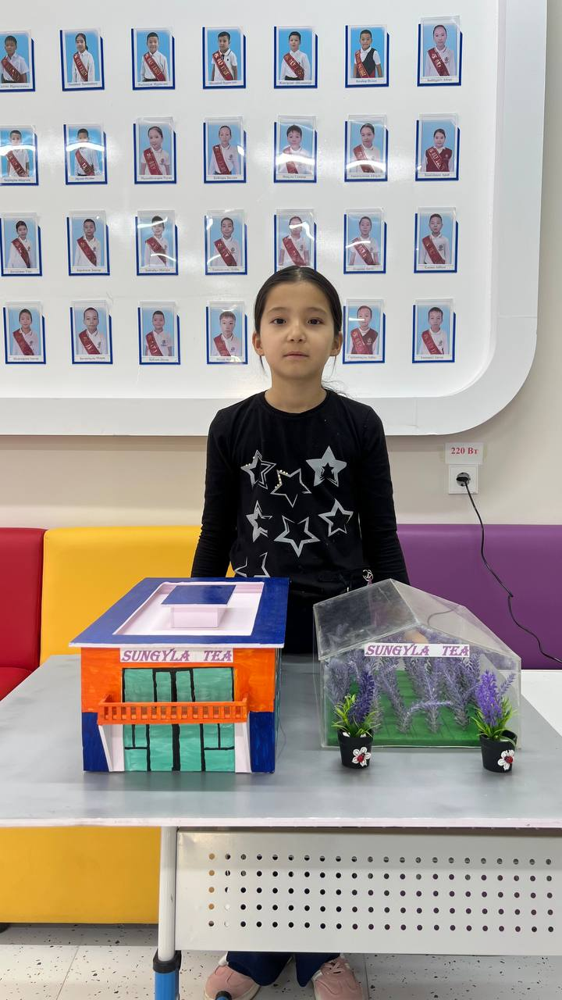
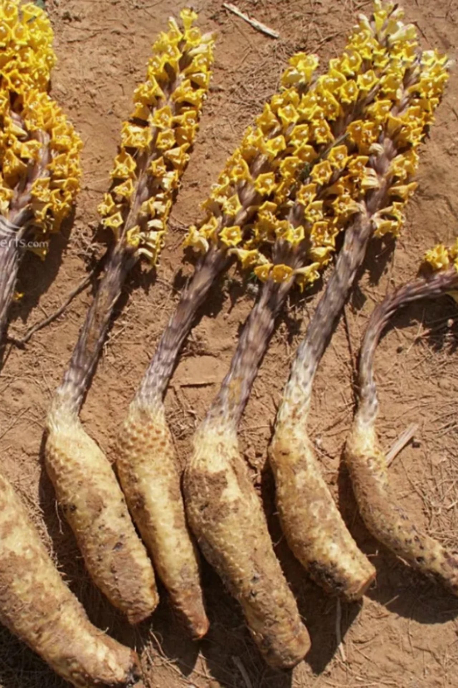

Әдебиеттерге шолу
Өсімдік туралы мәліметтерді жинақтау, географиялық деректер мен ботаникалық сипаттамаларды қарастыру.
ЖАС ЗЕРТТЕУШІНІҢ ҒЫЛЫМИ ЖОБАСЫ
Сұңғыланың адам денсаулығына пайдасы
Маңғыстау даласында өсетін сұңғыланы танып, оның табиғаттағы орнын, халық тәжірибесіндегі қолданылуын және зерттеу мүмкіндіктерін бірге қарастырайық.

Қалдыбек Эсманұр3 «Ә» сынып · Ақтау, 202601 — ӨСІМДІКПЕН ТАНЫСУ
Көзге бірден түсетін гүлшоғыры. Етті сабағы. Жер астындағы ерекше байланысы. Сұңғыланың әр белгісінің өз сыры бар.

Сұңғыла — басқа өсімдіктің тамырына байланысып тіршілік ететін хлорофилсіз паразитті өсімдік.
Ол жасыл өсімдіктер секілді фотосинтез жасамайды: су мен қоректік заттарды иесі болатын өсімдіктен алады. Ие өсімдік сұңғыланың түріне байланысты өзгереді. [1]
Гүлдері тығыз, масақ тәрізді гүлшоғырға жиналады. Түтікше пішінді гүлдерінің реңкі түріне қарай өзгереді. [1]
Сабағы жуан әрі етті келеді. Кәдімгі жасыл жапырақтардың орнына ұсақ қабыршақтар орналасқан. [1]
Сұңғыла ие өсімдіктің тамырына байланысады. Жобада сексеуіл маңында өсуі сипатталған. Барлық сұңғыла түрі тек сексеуілде ғана өседі деуге болмайды. [4]
Cistanche salsa түрінің табиғи таралу аймағына Қазақстан кіреді. Жобадағы өсімдіктің нақты түрі ботаникалық сараптамамен анықталмаған. [2]
02 — ІЗДЕНІС ЖОЛЫ
Сұңғыла қалай өседі? Жергілікті тұрғындар ол туралы не біледі? Халық тәжірибесін ғылыми тұрғыдан қалай бағалаймыз?
Өсімдік туралы мәліметтерді жинақтау, географиялық деректер мен ботаникалық сипаттамаларды қарастыру.
Табиғи ортадағы өсімдікті бақылау және 3 ауыл тұрғынының халық тәжірибесі туралы айтқанын жазып алу.
Жоба материалдарындағы бақылауларды, фотосуреттерді және 5 қатысушының субъективті пікірін жүйелеу.
ЗЕРТТЕУДІҢ НЕГІЗГІ СҰРАҒЫ
Жобада сұңғыланың дәстүрлі қолданылуы туралы әңгімелер жинақталып, өсімдіктің табиғи ортадағы ерекшеліктері сипатталған.
Бұл жұмыс туған өлкені тануға, дерек жинауға және әр пікірдің дәлелін іздеуге үйретеді.
Сұхбаттарды көру| Зерттеу тәсілі | Жобадағы мәлімет | Нәтижені түсіндіру |
|---|---|---|
| Сұхбат3 ауыл тұрғыны | Асқазанға, жөтелге және сергіту үшін қолданғанын айтқан. | Халық тәжірибесі туралы естеліктер. Емдік әсердің клиникалық дәлелі емес. |
| Табиғи ортада бақылауӨсімдікті сипаттау | Сексеуіл маңында өсуі және сабағының етті болуы сипатталған. | Өсімдік пен оның ортасы туралы бақылау дерегі. |
| Қатысушылар пікірі5 адамның сипаттамасы | Дәмі, шөлдің басылуы және сергектік туралы пікірлер жазылған. | Субъективті сезімдер. Бақылау тобы мен медициналық өлшемдер жоқ. |
Алғашқы дәмін ащылау, кейін жағымды деп сипаттаған.
Шөлінің басылғанын айтқан.
Өзін жеңіл сезінгенін жеткізген.
Тамақтың құрғауы азайғанын айтқан.
Сергітетін әсер сезінгенін сипаттаған.
Пікірлер бастапқы құжаттан мазмұндалып берілді. Бұл сипаттамалар емдік тиімділікті немесе қауіпсіздікті дәлелдемейді.
03 — ХАЛЫҚ ТӘЖІРИБЕСІ ЖӘНЕ ҒЫЛЫМ
Дәстүрлі қолданыс зерттеуге бағыт береді. Ал денсаулыққа әсері әр өсімдік түрі мен нақты өнім үшін бөлек тексеріледі.
Сұхбатқа қатысушылар асқазанға байланысты қолданылғанын айтқан.
Жөтел кезінде пайдаланғаны туралы естеліктер келтірілген.
Қатысушылар жеңілдік пен сергектік сезімін сипаттаған.
Кейбір Cistanche сығындыларында фенилэтаноидты гликозидтер, соның ішінде эхинакозид анықталған. [3]
Бір түрдің стандартталған сығындысына қатысты деректі жергілікті өсімдіктен жасалған қайнатпаға тікелей қолдануға болмайды.
Шағын топтың сезімі «иммунитетті көтереді» немесе «ауруды емдейді» деген қорытынды жасауға негіз болмайды.
04 — ФОТОШЕЖІРЕ
Өсімдік, ізденіс және кездесулер. Екі бастапқы файлдағы 12 фотоматериал — бір галереяда.
12 фотоматериалдың 6-ы көрсетілді
05 — БЕЙНЕМАТЕРИАЛДАР
Презентацияға енгізілген екі түпнұсқа видео. Дыбысы сақталған, сайттың өзінде толық көруге болады.
Видеоларда айтылатын жеке тәжірибелер сұхбат берушілердің пікірін білдіреді.
06 — ОҚУШЫЛАРДЫҢ ПІКІРІ
Оқушылардың сұңғыла туралы хабардарлығын және пікірін анықтауға арналған сауалнама нәтижелері.
Сауалнаманың сандық нәтижелері әлі енгізілмеген.
ЕНГІЗІЛГЕН ДЕРЕКТЕР БОЙЫНША
САУАЛНАМА ҚОРЫТЫНДЫСЫ
Автордың қорытындысы нақты нәтижелер енгізілгеннен кейін толықтырылады.
Пайыздар әр сұраққа жауап берген оқушылар саны бойынша есептеледі. Нәтиже осы сауалнамаға қатысқан топты сипаттайды; оқушылардың пікірі емдік әсердің дәлелі болып саналмайды.
07 — ҚОРЫТЫНДЫ ЖӘНЕ ҰСЫНЫС
Сұңғыла туралы ізденіс туған өлкенің өсімдіктерін танып-білуге, үлкендердің тәжірибесін тыңдауға және деректі сын тұрғысынан бағалауға жол ашады.
Өсімдікті тамырымен жұлмай бақылау. Сексеуіл мен басқа ие өсімдіктердің өсу ортасын қорғау.
Өсімдіктің нақты түрін маманмен анықтап, құрамы мен қауіпсіздігін ғылыми зертханада тексеру.
Автор Маңғыстауда сұңғыла негізіндегі шай өндірісін ұсынады. Бұл идеяны іске асырудан бұрын қауіпсіздік, тиімділік және табиғи қорды сақтау мәселелері бағалануы керек.